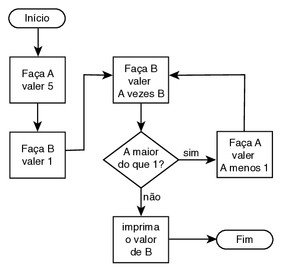
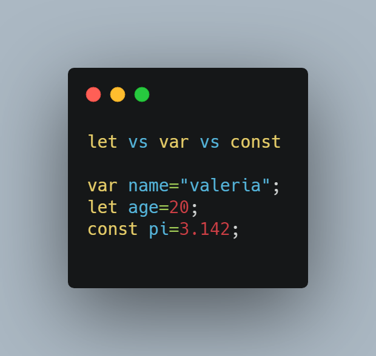
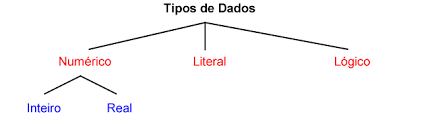

1. O que são Fluxogramas? Qual sua simbologia?
Fluxogramas são diagramas usados para representar visualmente etapas de um processo ou algoritmo.
Simbologia básica:
- 🟦 Início/Fim → Elipse
- ⬜ Processo → Retângulo
- 🔶 Decisão → Losango
- ➡️ Setas → Indicam fluxo

2. O que são algoritmos? Onde são usados?
Algoritmos são sequências de passos lógicos e finitos para resolver um problema ou executar uma tarefa.
Estão presentes em: sistemas, aplicativos, rotas de GPS, redes sociais, automação e muito mais.


3. O que é o Portugol? O que é o Portugol Studio?
Portugol é uma pseudolinguagem próxima do português usada para ensinar lógica de programação.
Portugol Studio é um ambiente gratuito que permite criar, executar e visualizar algoritmos.
Espaço para foto abaixo:
4. O que são Variáveis e Constantes?
Variáveis: espaços na memória cujo valor pode mudar.
Constantes: valores fixos que não podem ser alterados durante o programa.

5. Tipos de dados em algoritmos (Portugol)
- Booleano
- Caracter
- Cadeia (string)
- Inteiro
- Real
- Vetor

6. Exemplos de Programas em Portugol (Funções)


7. Exemplos de Programas em Portugol (Vetores)